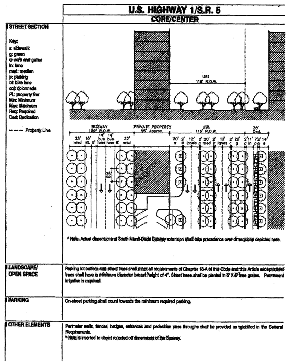

ARTICLE XXXIII(P).
Sec. 33-284.99.23. Purpose, intent and applicability.
Sec. 33-284.99.24. Cutler Ridge Metropolitan Urban Center District (CRMUC) Requirements.
Sec. 33-284.99.26. CRMUCD Regulating Plans.
Sec. 33-284.99.27. Building Placement and Street Type Development Parameters.
Sec. 33-284.99.28. General Requirements.
Sec. 33-284.99.29. Conflicts with other Chapters and Regulations.
Sec. 33-284.99.30. Non-conforming Structures, Uses, and Occupancies.
Sec. 33-284.99.23.
A.
The regulations contained in this chapter and Chapter 18A, Landscape Code, Code of Miami-Dade County, Florida, shall apply to this article, except as otherwise added to or modified herein.
B.
The Illustrative Master Plan (Figure 1), illustrates the citizens' vision and may be used to interpret this article. Where the Illustrative Master Plan conflicts with the text of this article, the text shall govern.
C.
The boundaries shown in Figure 1 that are labeled as 'Miami-Dade County' shall constitute the Cutler Ridge Metropolitan Urban Center Boundary Plan and are generally described as follows: from the intersection of the centerline of the SW 112 Avenue with the centerline of US 1, then south along the centerline of SW 112 Avenue to the north side of the C-1 Canal (Black Creek Canal), then west along the north side of the Black Creek Canal to the west side of the South Miami-Dade Busway, then north along the west side of the South Miami-Dade Busway to the centerline of SW 117 Avenue, then northwest along the centerline of SW 117 Avenue to the centerline of SW 114 Court, then north along the centerline of SW 114 Court to the centerline of SW 203 Terrace, then east along the centerline of SW 203 Terrace to the centerline of SW 112 Court, then south and southeast along the centerline of SW 112 Court to point of beginning.
A more detailed legal description of the boundaries follows:
Beginning at the intersection with the centerline of Black Creek Canal (C-1) and the west line of the Southeast one quarter of Section 7, Township 56 South, Range 40 East, Miami-Dade County Florida lying in SW 112th Avenue (Allapattah Road), thence westerly along the center line of Black Creek Canal (C-1) to the intersection with the East Right-of-Way of South Miami-Dade Bus way; thence north-easterly along the East Right-of-Way of South Miami-Dade Bus way to the intersection with theoretical extension of the Southwest Lot Line of Lot 1, block 12, of South Miami-Heights PB.72-PG.87; thence northwest along the theoretical extension of the Southwest Lot Line of Lot 1, block 12, of South Miami Heights PB.72-PG.87 to the intersection with the West Property Line of Lot 1 (SW Cor. of lot 1) Block 12, of South Miami Heights PB.72-PG.87; thence northeast along the West lot line of lot 1, block 12, South Miami Heights, PB.72-PG.87 to the intersection of the East Boundary Line of block 12, South Miami Heights PB.72-PG87; thence north along said Boundary Line to the intersection of the West Lot Line of Lot H of the Re-Subdivision of Cutler Gate PB.70-PG.100; then northeast along Lot Lines H, G, F, E of Re-Subdivision of Cutler Gate PB.70-PG.100 and Lot Lines 1 through 7, block 5, and Lot Lines 1 & 2 block 4, of Cutler Gate PB.64-PG.77 to the intersection with the East Right-of-Way Line of SW 113 Road; thence northwesterly along the East Right-of-Way of SW 113 Road to a point on the West Right-of-Way of SW 114 Ave; thence south on the West Right-of-Way of SW 114 Ave. to the intersection of the North Lot Line of lot 15, block 1, of Cutler Gate PB.64 — PG.77; thence northwest along the North lot line of said lot 15, block 1 to the intersection with the East boundary line of block 12, of South Miami Heights PB.72-PG.87; thence north along the East boundary line of said block 12 to the intersection of the North boundary line of Tr.A and Tr.B of Old Cutler Ridge Crossing PB.148-PG.90; thence east along the North Boundary line of TR.A and TR.B. to the intersection with the East Boundary line of TR. B. of Old Cutler Crossing, plat book 148 at page 90; thence south along the East Boundary line of TR.B of Old Cutler Crossing plat book 148 at page 90 and a Southerly prolongation of the East Boundary line of TR.B. with the West line of the Northeast one quarter of Section 7 and the West line of the Southeast one quarter (SW 112 Avenue Allapattah Road) to the point of beginning.
Full scale maps of the Illustrative Master Plan presented in Figure 1, as well as all the Regulating Plans and Street Development Parameters figures in this article, are on file with the Miami-Dade Department of Planning and Zoning.
D.
No provision in this article shall be applicable to any property lying outside the boundaries of the Cutler Ridge Metropolitan Urban Center District (CRMUC) as described herein. No property lying within the boundaries of the CRMUC shall be entitled to the uses or subject to the regulations provided in this article until an application for a district boundary change to CRMUC has been heard and approved in accordance with the provisions of this chapter.

Figure 1: Illustrative Master Plan
(Ord. No. 06-152, § 1, 10-10-06)
Sec. 33-284.99.24.
Except as provided herein, all developments within the CRMUC shall comply with the requirements provided in Article XXXIII(K). Standard Urban Center District Regulations, of this code.
(Ord. No. 06-152, § 2, 10-10-06)
Except as provided herein, all permitted, conditionally permitted, and temporary uses within the CRMUC shall comply with Section 33-284.83 of this code.
A.
Permitted Uses. The following uses shall be permitted in areas designated Industrial (ID).
1.
In addition to all uses permitted in the Industrial area under Section 33.284.83, all uses permitted in the Mixed-Use Corridor (MC).
B.
Conditionally Permitted Uses. In addition to the conditionally permitted uses in Section 33-284.83(B) of this Code, the following conditional use shall be permitted subject to the administrative approval of a site plan, pursuant to Section 33-284.88 of this code, to assure compliance with the requirements established herein:
1.
Automobile new sales agency shall be permitted only upon approval after public hearing, provided that the following conditions are also satisfied:
a.
The building shall comply with the Building Placement and Street Type Development Parameters and the General Requirements in Section 33-284.85-86 of this Code and as established by the land use and sub-districts regulating plans provided in Section 33-284.99.17 of this code.
b.
All outdoor paging or speaker systems shall be prohibited.
c.
Repair work of any type shall not be permitted on premises unless approved after public hearing and maintained within an enclosed building and screened from the street.
d.
The applicant shall obtain a certificate of use and occupancy, which shall be automatically renewable yearly upon compliance with all applicable terms and conditions.
(Ord. No. 06-152, § 3, 10-10-06)
Sec. 33-284.99.26.
The Regulating Plans consist of the following controlling plans, as defined and graphically depicted in this section.
•
The Street Types Plan, which establishes a hierarchy of street types in existing and future locations. The five Street Types and the hierarchy of streets (from most important to least important in accommodating all types of activity) are U.S. 1, Main Street, Boulevard, Minor Street, and Service Road.
•
The Sub-districts Plan, which delineates 3 Sub-districts: Core, Center and Edge. These Sub-districts shall regulate the allowable intensity of development in accordance with the Comprehensive Development Master Plan and this article.
•
The Land Use Frontage Plan, which delineates the areas where specified land uses and development of various types and intensities shall be permitted.
•
The Building Heights Plan, which establishes the minimum and maximum allowable number of stories.
•
The Designated Open Space Plan, which designates open spaces. The designated open spaces shall be controlled by anchor points.
•
The New Streets Plan, which shows the location and the number of new streets needed to create the prescribed network of streets within each Urban Center District. All new A streets shall be required in the same general location as shown on the New Streets Plan. All B streets shall be located as provided in Section 33-284.86(F) of this code.
•
The Bike Route Plan, which depicts the designated bike routes, including the bike facility requirements, if any, which shall be shown in all development plans.
Street Types Plan
Sub-Districts Plan
Land Use Frontage Plan
Building Heights Plan
Designated Open Space Plan
New Street Dedications Plan
Bike Route Plan
(Ord. No. 06-152, § 4, 10-10-06)
Sec. 33-284.99.27.
A.
All new development and redevelopment within the CRMUC shall comply with the Building Placement and Design Parameters as provided in Section 33-284.85 of this code, except that the properties between the South Miami-Dade Busway and U.S.1, shall be exempt from the minimum frontage requirements. In addition, for properties between the South Miami-Dade Busway and U.S.1, parking shall be accessed from U.S.1, and the vehicular entry way shall be a maximum of 33 feet.
B.
All new development and redevelopment within the CRMUC shall comply with the Street Types Parameters as provided herein:
| Street type | Minimum Required Configuration | |
| Core/Center | Edge | |
| U.S. 1 | As provided in this section | |
| Main Street | As provided in this section | |
| Boulevard | As provided in this section | |
| Minor Street | As provided in Section 33-284-85 | |
| Service Road | As provided in Section 33-284.85 | |
| Pedestrian Passage | As provided in Section 33-284.85 | |
C.
Unless otherwise provided by the Building Placement and Design Parameters in Section 33-284.85 of this code, the following front and side street setbacks shall be required for MM, MO, MC, and ID uses within the CRMUC:
| Frontage Table |
|||
| Street type | Required Setback | ||
| Core | Center | Edge | |
| U.S. 1 | 0 feet | 0 or 10 feet | 0 or 10 feet |
| Main Street | 0 feet * | 0 feet * | N/A |
| Boulevard | N/A | 0 or 10 feet | 0 or 10 feet |
| Minor Street | 0 feet | 0 or 10 feet | 0 or 10 feet |
* Colonnade Required 
U.S. Highway 1/S.R. 5 Core/Center
U.S. Highway 1/S.R. 5 Center/Edge
Main Street Core
Main Street Core/Center
Main Street Center/Edge
Boulevard (SW 211 Street) Core/Center/Edge
Boulevard (Carribean Boulevard) Center
Boulevard Center
Boulevard (SW 112 Avenue) Center/Edge
(Ord. No. 06-152, § 5, 10-10-06)
Sec. 33-284.99.28.
Except as provided herein, all developments within the CRMUC shall comply with the requirements provided in Section 33-284.86 of this code.
A.
Buildings. In addition to the requirements of Section 33-284.86 of this Code, all buildings within the CRMUC shall comply with the following requirements:
1)
Where colonnades are provided, the colonnade shall be placed along the property line.
2)
Minimum spacing between towers within any one contiguous property line shall be 60 feet.
3)
Aggregate tower frontage facing any street may not exceed 225 feet per block or 70 percent of street frontage; whichever is greater.
4)
Vehicular entry gates at garage entries shall be positioned a minimum of 20 feet behind the front wall of the building. At colonnaded frontages, this distance shall be measured from the interior/rear wall of the colonnade. To increase safety during off-hours, the setback area between the entry gate and the public sidewalk may be gated at the sidewalk edge during times when the garage is closed.
5)
Drop off drives and porte-cocheres may only occur in the rear, on the side, and/or along service roads.
6)
Loading and service entries shall be allowed only in the rear along service roads and/or within parking lots and structures.
7)
Vehicular entries to garages shall be allowed only from service roads and/or minor streets. Along minor streets, vehicular entries shall have a maximum width of 33 feet and a minimum separation of 70 feet between entries. Along service roads, vehicular entries shall not be limited.
8)
The penthouse shall occur above the tower level and shall be limited to 50 percent of the largest tower floorplate.
9)
A cornice line shall be required at the top of the third story of MM, MO, MC, and ID buildings, as provided in Section 33-284.86 of this code.
(Ord. No. 06-152, § 6, 10-10-06)
Sec. 33-284.99.29.
This article shall govern in the event of conflicts with other zoning, subdivision, or landscape regulations of this code, or with the Miami-Dade Department of Public Works Manual of Public Works.
(Ord. No. 06-152, § 7, 10-10-06)
Sec. 33-284.99.30.
All legal nonconforming structures, uses, and occupancies in the CRMUC that either (1) were existing as of the date of the district boundary change on the property to CRMUC or (2) on or before said date, had received final site plan approval or had a valid building permit, shall be exempt from the provisions of Section 33-35(c) of this Code upon compliance with the requirements of this section for a period of 10 years from the date of the district boundary change on the property to CRMUC. Such nonconforming structures shall be allowed to be rebuilt and such uses and occupancies resumed in compliance with plans of record and certificates of use and occupancy approved as of the date of the district boundary change on the property to CRMUC. Such structures, uses and occupancies shall be in compliance with all other provisions of this Code in effect at the time of the application to rebuild or resume occupancy. Building permits for rebuilding pursuant to this section shall be obtained within one year after the date of damage or destruction of the nonconforming structure. If the building permits necessary to rebuild a nonconforming structure have not been obtained within one year after the date of damage or destruction, or if such permits expire or are revoked after that year has concluded, the structure shall be subject to the provisions of Section 33-35(c).
(Ord. No. 06-152, § 8, 10-10-06)